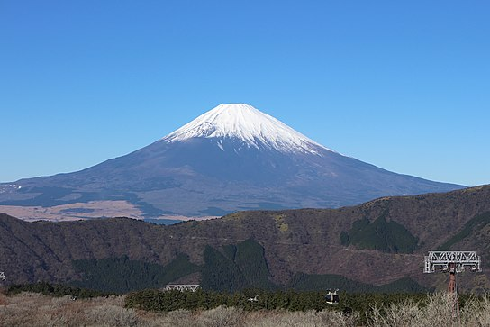

Where to go
Japan stands as a captivating enigma, seamlessly blending ancient traditions with cutting-edge technology. Despite being a forefront of industrial advancement, this compact Asian nation surprises first-time visitors with its deep, millennia-spanning history.
Weather Data
| Month | Jan | Feb | Mar | Apr | May | Jun | Jul | Aug | Sep | Oct | Nov | Dec |
|---|---|---|---|---|---|---|---|---|---|---|---|---|
| Average High °C | 9 | 10 | 13 | 18 | 22 | 25 | 29 | 30 | 26 | 21 | 16 | 12 |
| Average Low °C | 3 | 3 | 6 | 11 | 16 | 20 | 23 | 24 | 21 | 15 | 10 | 5 |
Top atttractions
|  | Mount Fuji | Rising to an impressive height of 3,776 meters, Mount Fuji claims the title of Japan's tallest peak. Its near-perfect volcanic form has garnered reverence as a sacred mountain, drawing admiration from artists and the public for centuries. Despite its last eruption in 1707, this active volcano remains an iconic sight visible from Tokyo and Yokohama on clear days, standing proudly at the border of Yamanashi and Shizuoka prefectures. |
 |
Imperial Tokyo | Explore Tokyo's renowned landmark, the Imperial Palace, embraced by exquisite 17th-century parks, walls, and moats. A visit to the nation's capital is incomplete without experiencing the allure of this majestic site, even though most of the palace remains inaccessible (reserved for the Imperial family). Wander the open grounds for a captivating glimpse into its historic charm. |
 |
Osaka Castle | Constructed in 1586 by the renowned Japanese warrior and politician Toyotomi Hideyoshi, Osaka Castle (Ōsaka-jō) stood as the largest and most significant fortress of its time. Despite undergoing destruction and subsequent rebuilds, the current 1931 structure faithfully preserves the essence of the original masterpiece. |
 |
Fushimi Inari-taisha Shrine | A visit to Fushimi Inari-taisha Shrine immerses you in a stunning sea of red. Nestled in southern Kyoto, this revered shrine, adorned with thousands of scarlet gates gracefully arching over interconnected trails, is a Japanese treasure. The hushed ambiance along these covered paths promises a tranquil journey into the wooded surroundings of Mount Inari. |
 |
Okinawa Churaumi Aquarium | The Okinawa archipelago, comprising over 150 islands nestled between Taiwan and Japan's mainland, offers a distinct tropical oasis. Distinguished by picturesque beaches and swaying palm trees, this unique environment sets it apart from other Japanese regions. The main island, Okinawa, hosts various museums and the renowned Churaumi Aquarium. |
What to do
Explore Tokyo
Visit iconic landmarks like Tokyo Tower, Senso-ji Temple, and the bustling districts of Shibuya and Shinjuku.
Cherry Blossom Viewing
Experience the beauty of cherry blossoms in spring, particularly in places like Ueno Park and Hirosaki Castle.
Historical Nara
Interact with friendly deer in Nara Park and explore historic sites like Todai-ji Temple.
Events
Tokyo Game Show (September)
A major event for the gaming industry, the Tokyo Game Show showcases the latest video games, gaming technology, and trends. It attracts gamers, developers, and enthusiasts from around the world.
Cherry Blossom Festivals (March-April)
Across Japan, cherry blossom festivals, known as "Hanami," are celebrated during spring. People gather in parks for picnics under blooming cherry trees. Notable spots include Tokyo's Ueno Park and Kyoto's Maruyama Park.
Sumo Wrestling Tournaments (Multiple)
Sumo wrestling tournaments are held throughout the year in major cities like Tokyo, Osaka, Nagoya, and Fukuoka. Each tournament spans 15 days, offering spectators a chance to witness Japan's traditional and highly ritualized sport.